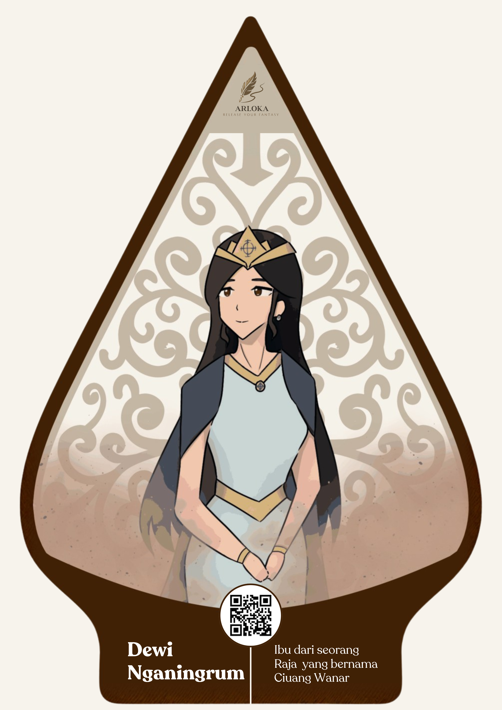
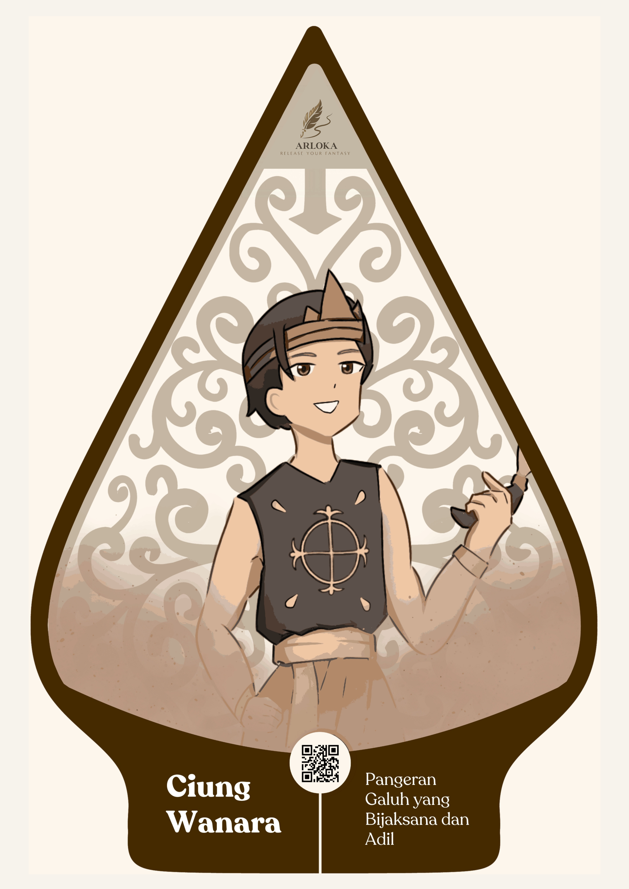
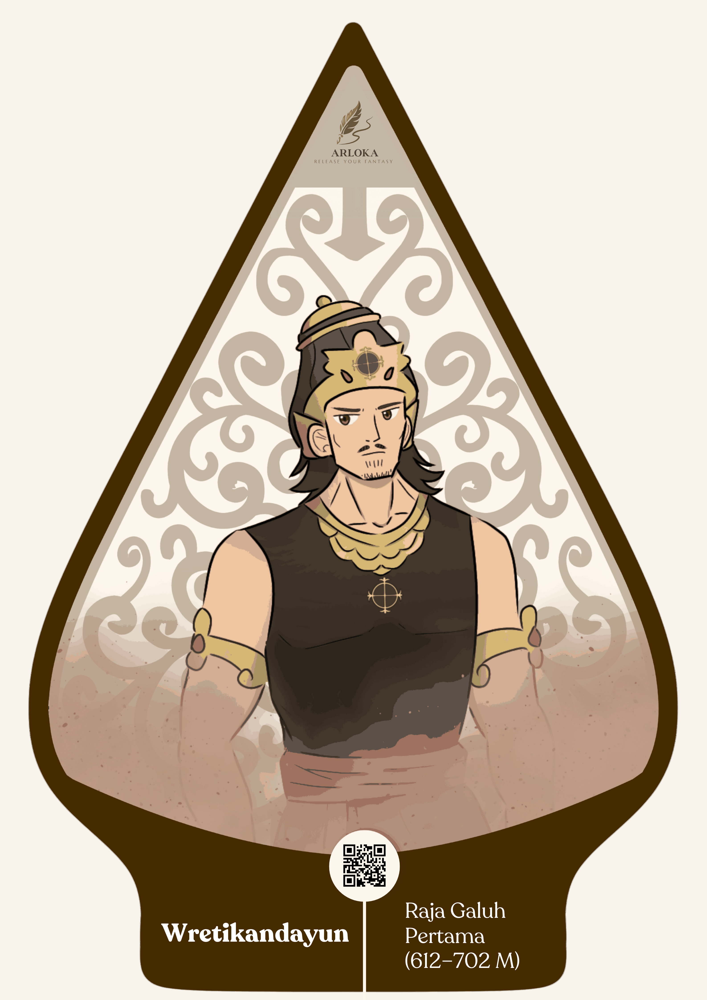
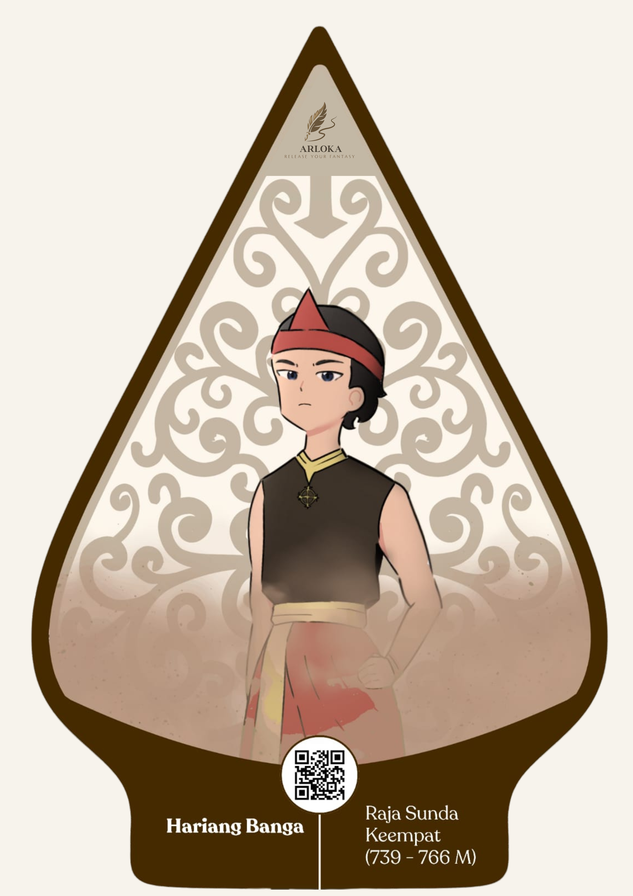
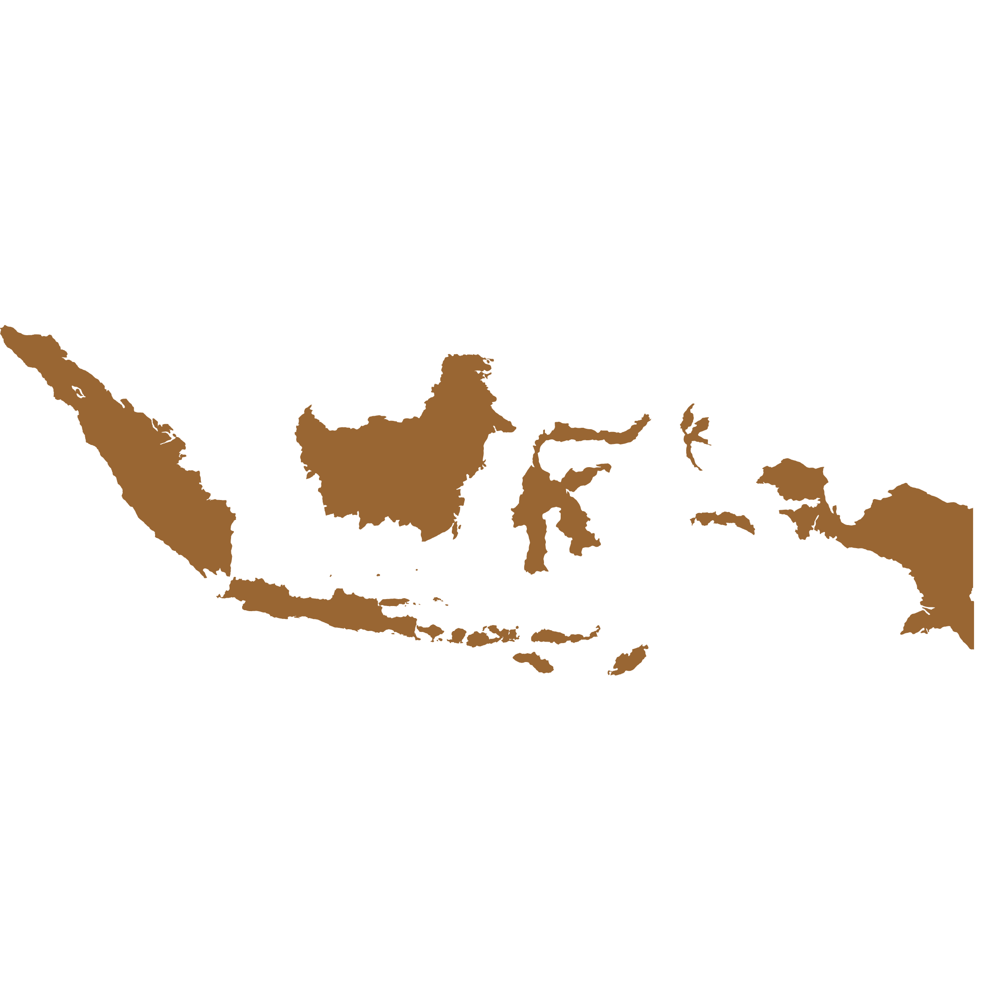

Release Your Fantasy





Selamat Menjelajahi Petualangan Baru
"Satu goresan hari ini bisa membuka dunia yang belum pernah kamu lihat. Dan jangan takut mencoba, karena setiap petualangan dimulai dari keberanian pertama."
